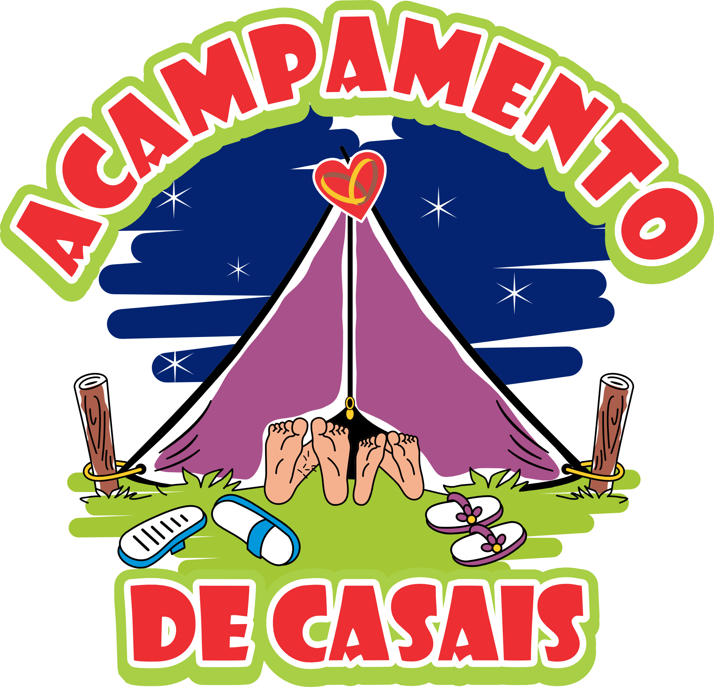

Acampamento de Casais
Experiência imersiva e transformadora para fortalecer o relacionamento conjugal em um ambiente natural e acolhedor.
Somos uma inspiração de Deus! Nossa missão é fortalecer a espiritualidade conjugal e ajudar os casais a redescobrirem a alegria e a graça do matrimônio. Aqui você encontra quem somos, o que fazemos e como participar — enquanto as novidades e inscrições acontecem nas nossas redes.
Devolver para as paróquias casais mais conscientes da sua missão de batizados e casados. Nossa missão nasceu com a bênção do então Bispo Diocesano, Dom Gregório Paixão, e hoje segue com o apoio de Dom Joel Portella Amado, nosso atual bispo. Somos uma missão diocesana que responde ao chamado de São João Paulo II para a nova evangelização, com novos métodos, nova expressão e um novo ardor.
Caminhos práticos para fortalecer diálogo, perdão e aliança no matrimônio.
Vivências de oração e sacramentos que renovam o amor e a fé do casal.
Serviço à Igreja e testemunho de família, irradiando esperança a outras famílias.
Celebramos com gratidão os frutos de uma caminhada construída na fé, em comunhão com a Igreja e a serviço das famílias.
Encontro aberto para todos, com horário fixo. Clique em um card para abrir a localização no Maps.
Observação: datas especiais e alterações pontuais são divulgadas pelos canais oficiais.
Datas dos encontros e cursos ao longo do ano. Em caso de retificações, a divulgação oficial acontece pelas redes.
Aqui você encontra uma visão geral das experiências. As inscrições e novidades acontecem nas nossas redes.
“Após o encontro, sentimos o chamado para servir e hoje atuamos na Pastoral da Crisma, ajudando jovens a fortalecerem sua fé. A Missão Casais Restaurados transformou nossa família e nos motivou a evangelizar outras.”
— Léo e Jodelle
Para falar com a equipe, envie uma mensagem diretamente pela nossa DM no Instagram. Para inscrições, acesse o Linktree.
Respostas e comunicados são realizados pelos canais oficiais.